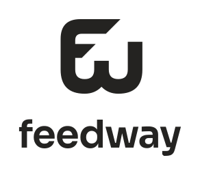

FEEDWAY / BRAND KIT 1.0 / 15 OTTOBRE 2026Arancio + carbone.
Un marchio, i file giusti.
La direzione approvata, raccolta con loghi, icone, colori e regole d’uso. Tutto funziona anche senza connessione.
Su fondo chiaro

Formato verticale

Versione bianca

Colori e carattere
Arancio #FF762E
Carbone #242321
Sora 650 per titoli. Il logo è già in tracciati.
Trova il formato adatto
Sul fondo arancio usa testo carbone. Le icone quadrate hanno il fondo pieno; i loghi PNG hanno trasparenza. Prima del lancio pubblico resta da verificare l’esclusiva del nome e del segno.